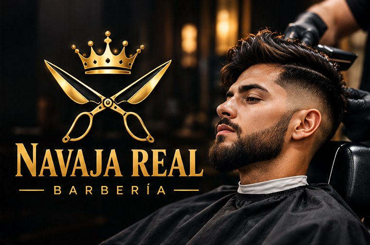

Corte de cabello
Tijera o máquina, lavado y peinado.
S/ 20
Cortes, barba y afeitado con toalla caliente. Reserva tu turno y llega sin esperar.
Reservar turno
Tijera o máquina, lavado y peinado.
S/ 20
Navaja, toalla caliente y aceite.
S/ 15
El paquete más pedido.
S/ 30
Espuma, navaja y bálsamo.
S/ 18
Para menores de 12 años.
S/ 15
Cobertura de canas natural.
S/ 40
Barbería de oficio: herramientas esterilizadas, productos profesionales y un ambiente tranquilo donde cada cliente sale con su mejor versión.
Corte, barba o el paquete completo.
Turnos cada 45 minutos.
Nosotros hacemos el resto.
“El mejor degradado de la zona. Siempre salgo conforme.”
“Puntuales y muy limpios. Recomendado.”
“Llevé a mi hijo y quedó feliz.”
Recomendamos reservar. Si hay espacio, atendemos sin cita.
Entre 30 y 45 minutos.
Efectivo, Yape, Plin y tarjeta.
Martes a sábado, 10:00 a 20:00
Jr. Los Olivos 456, Lima